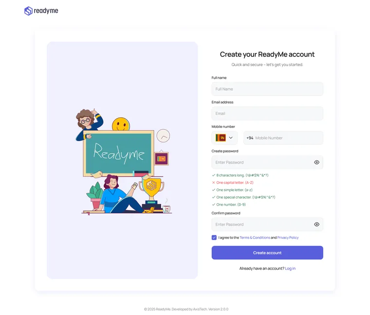
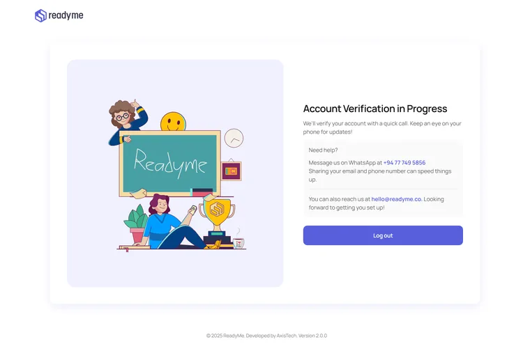
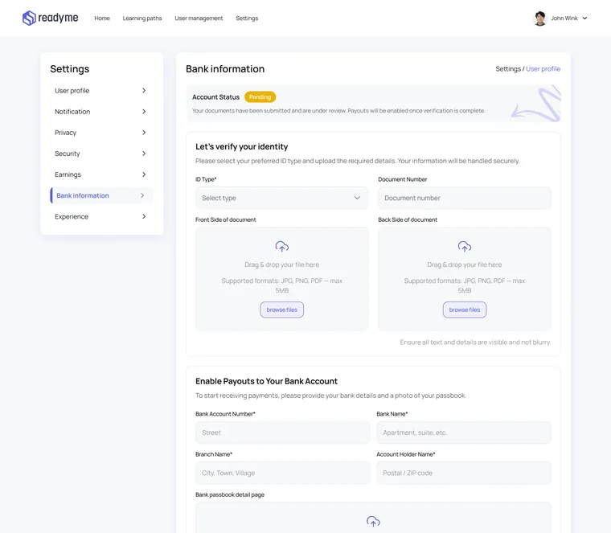

01
Onboarding & trust
Getting started, with trust built in.
Tutor needTutors need to start quickly, and students need to know a tutor is real before paying.
Design decisions
- Password rules check themselves as you type, so sign-up never fails at the last step
- After sign-up, a clear “verification in progress” screen says what happens next and how to get help on WhatsApp or email
- Identity and payout details live together in Settings, with a visible Pending status, so payouts are never a mystery


